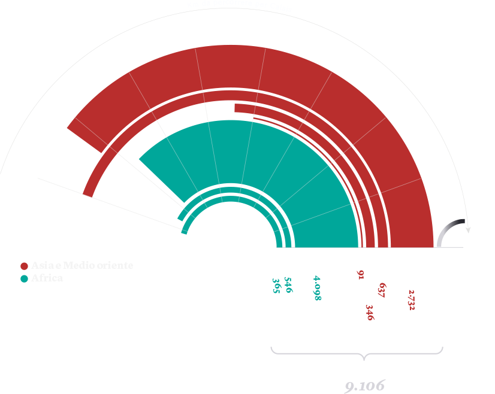
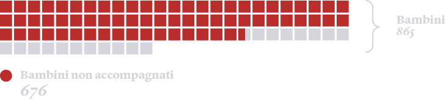

La città portuale di Calais, nel nord della Francia, è il principale punto di accesso per le rotte irregolari dirette in Inghilterra. Qui vivono migliaia di migranti in campi informali da loro stessi soprannominati “giungle”. Il loro obiettivo è salire di nascosto sui camion per attraversare la Manica. Il Regno Unito sta oggi costruendo un grande muro in territorio francese per bloccare questo flusso.
La grande maggioranza dei residenti di Calais proviene dall’Afghanistan e dal Sudan.
Secondo l’organizzazione Refugee Rights, all’interno del campo di Calais quasi una donna su due ha subito una qualche forma di violenza.
Hanno subito violenza (totale)
Hanno subito violenza (donne)
Hanno subito violenza da parte della polizia
Nel campo di Calais vivono 865 bambini, il 78 per cento dei quali non accompagnati.
Fonti: Refugee Rights, Help Refugees